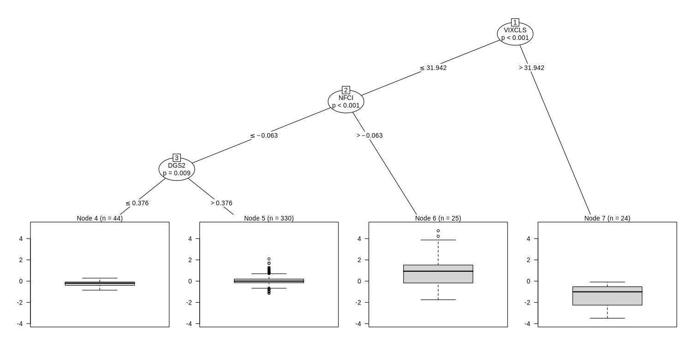

A VIX-led regime tree for credit spreads: readable, stable, and not real enough
The 4-leaf tree reproduces exactly and VIX wins the root in about 70% of bootstraps. But a shifted response still splits 60% of the time, and the tree loses to the historical mean out of sample.
methods/partykit/APPROVAL.md (workflow, Stage 4b). Until then the skill it feeds is a DRAFT.The short version
- A 4-leaf conditional inference tree for the 6-month-ahead change in the GZ credit spread. The root is VIX ≤ 31.9, and VIX takes the root in 68% of block bootstraps (65–75% across 5 more seeds). Reproduced exactly.
- It is not real enough. When the response is circularly shifted, which keeps its autocorrelation but breaks its link to the features, the tree still splits 60% of the time.
- As a forecaster it lost to the historical mean, with walk-forward OOS R² of −0.31. CART (−0.40) and OLS (−0.43) did worse.
Question
Which macro-financial states come before large widening or tightening of credit spreads over the next six months?
Data used
Drive ebp_monthly.csv (GZ spread, EBP) and FRED VIXCLS, T10Y2Y, NFCI, DGS2 and MORTGAGE30US, as month-end means (manifest.json). The response is GZt+6 − GZt. Features: VIX, 10y–2y, NFCI, 2y, 12-month Δ2y, EBP, 12-month Δmortgage rate, and 3-month ΔGZ. n = 423 months, 1991-01 → 2026-03.
What we ran
methods/partykit/applications/1/run.R fits ctree(alpha = 0.05, minbucket = 24, maxdepth = 3). It also runs an annual walk-forward from 2004, where training ends 6 months before each refit; CART with CV pruning and OLS as baselines; split windows; 300 bootstraps with 24-month blocks; 5 more bootstrap seeds; and 100 iid and 100 circular-shift nulls.
Figures and tables

| leaf rule | n | mean 6m ΔGZ | P(widen > 50bp) |
|---|---|---|---|
| VIX > 31.9 | 24 | −1.40 | 0.00 |
| VIX ≤ 31.9 & NFCI > −0.063 | 25 | +0.92 | 0.56 |
| VIX ≤ 31.9 & NFCI ≤ −0.063 & 2y > 0.376 | 330 | +0.06 | 0.13 |
| VIX ≤ 31.9 & NFCI ≤ −0.063 & 2y ≤ 0.376 | 44 | −0.25 | 0.00 |
Original vs reproduced
| number | original | reproduced |
|---|---|---|
| leaves / root | 4 / VIX ≤ 31.94 | 4 / VIX ≤ 31.94 |
| OOS R² vs hist mean (n = 267): ctree / CART / OLS | −0.310 / −0.400 / −0.426 | −0.310 / −0.400 / −0.426 |
| bootstrap share with VIX at root | 0.683 | 0.683 |
| window roots: 1990–2007 / 2008–2026 | 10y–2y ≤ 2.03 / VIX ≤ 27.3 | same |
Robustness
- Share with VIX at root over 5 more bootstrap seeds: 0.653–0.747.
- iid-permutation null: splits in 3% of 100, as expected at α = 0.05.
- Circular-shift null: splits in 60% of 100. Two persistent series line up by chance often enough to fool the permutation test.
- By era, ctree OOS R² was −0.32 (2004–09), −0.46 (2010–19) and +0.27 (2020–26).
Limitations
- Overlapping 6-month targets and persistent features break the exchangeability that ctree's p-values rely on.
- The root moves between sub-samples: the yield curve before 2008, VIX after.
Takeaway
It's a readable description of past states. It isn't a regime model you can trust or a forecaster. The skill now requires the circular-shift null for any time-series tree.
Back to the method
partykit trees: readable subgroups that pass on a cross-section and overfit time series
Conditional inference trees and model-based trees reproduced exactly. They clear every gate on 3,074 counties, but a circular-shift null breaks both time-series uses. Recommended (scoped), awaiting approval. A well-known package, so less of a scout find.